Week 1 · Follow the proton and the electron pair
Draw proton transfers; identify conjugates; compare acid strength and interpret an aqueous speciation model.
Locate lone pairs and calculate formal charge. A curved arrow starts at an electron pair, not at an isolated proton.
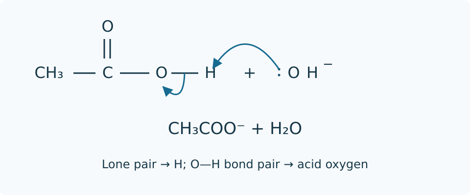
Find the electron source before the proton moves
Point to a hydroxide lone pair, the acidic H and the O–H bonding pair.
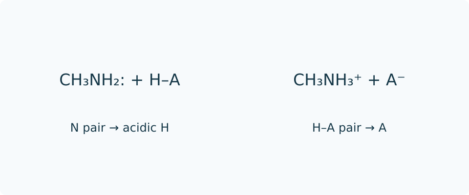
Protonate a nitrogen using two arrows
N pair goes to H; H–A bond pair goes to A. The products are ammonium and A⁻.
Follow both pairs in the oxygen example
The base makes a new bond to H while the acid oxygen keeps its original bonding pair.
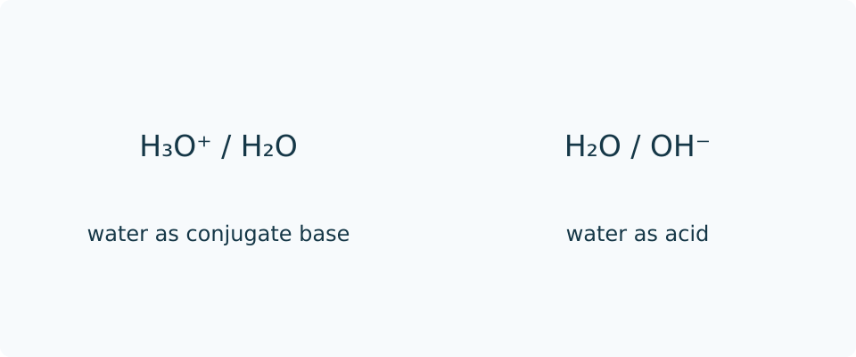
Let water play either role
Water is the conjugate base of hydronium and the acid corresponding to hydroxide.
An electron-pair-flow arrow shows where an electron pair comes from. Does an isolated proton supply that pair?
Begin at a lone pair or bond. H⁺ can be the destination but is not a source of an electron pair.
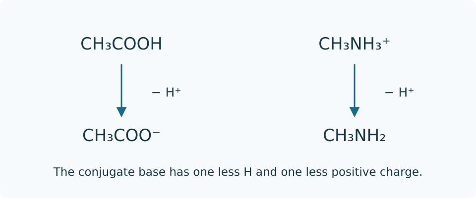
Compare each acid with its conjugate base
What single particle differs, and by how much does formal charge change?
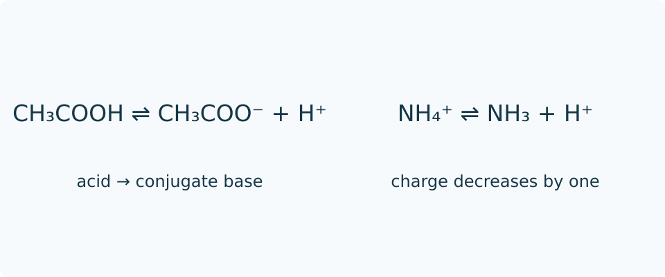
Use one rule for neutral and charged acids
Ethanoic acid gives ethanoate; ammonium gives ammonia. Each loses H⁺.
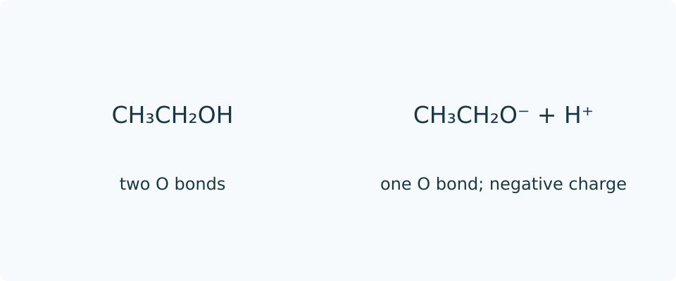
Apply the rule to an alcohol
Ethanol gives ethoxide on deprotonation. Its oxygen changes from two bonds to one and gains a lone pair.
Write the neutral/charged formula and count N bonds before naming the result.
CH₃NH₂ has three N bonds and one lone pair. The initial +1 charge becomes zero.
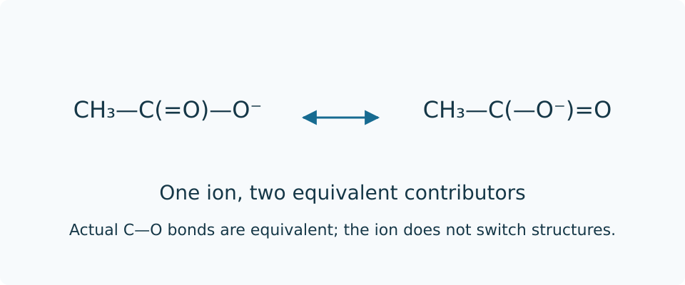
Explain why the two C–O bonds are equivalent
Which electrons differ between the two ethanoate contributors, and which nuclei stay fixed?
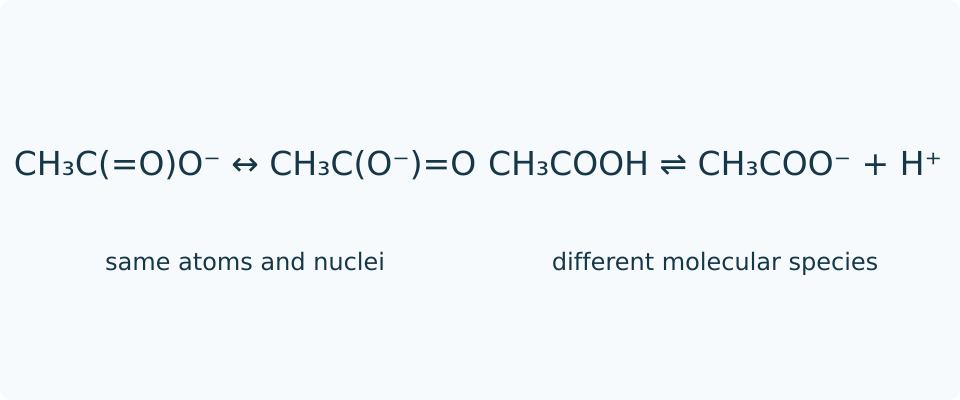
Distinguish contributor arrows from equilibrium arrows
Resonance describes one delocalised species. Proton transfer changes which molecular species are present.
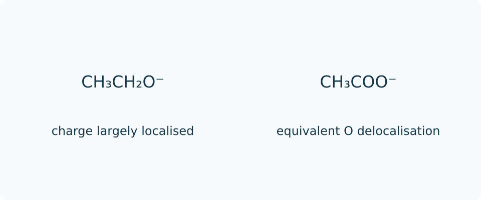
Compare ethoxide with ethanoate
Equivalent delocalisation over two oxygens stabilises ethanoate relative to a localised alkoxide description.
If a proposed second drawing moves H from one atom to another, is only electron placement changing?
A proton shift is a chemical transformation. Resonance contributors preserve nuclear positions and connectivity.
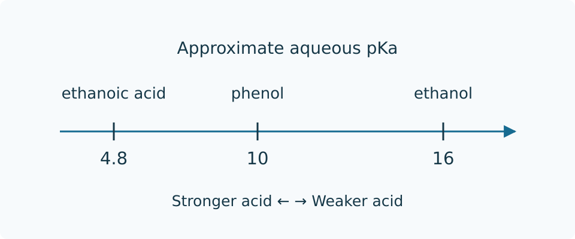
Read the acid scale in the right direction
Lower pKa corresponds to greater acid dissociation under comparable conditions.
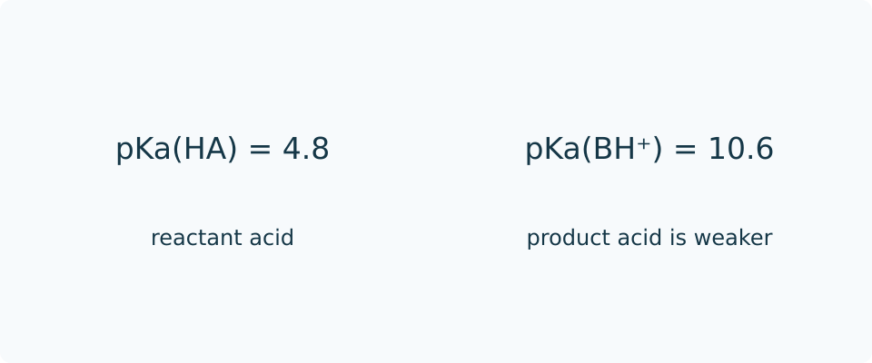
Choose the two relevant acid pKa values
For HA + B ⇌ A⁻ + BH⁺, compare HA with BH⁺, rather than comparing unrelated acidic sites.
A logarithmic change represents a ratio
A decrease of one pKa unit corresponds to a tenfold increase in Ka, with compatible conventions.
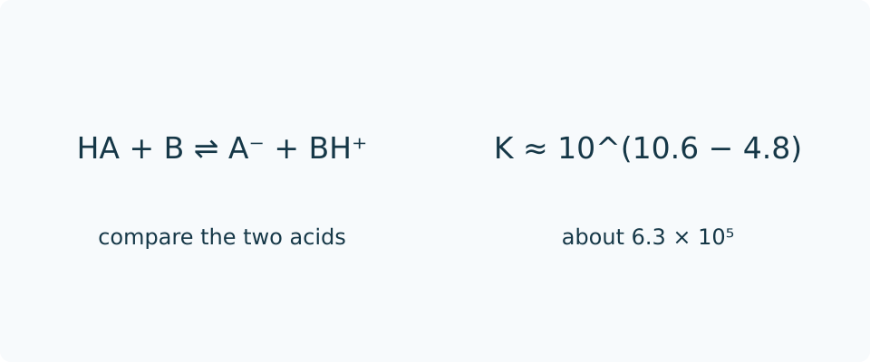
Estimate the product-favoured equilibrium
10^(10.6 − 4.8) is about 6.3 × 10⁵. The product acid is much weaker.
If the product acid instead has lower pKa than HA, is the forward equilibrium strongly favoured?
K becomes less than one. Equilibrium favours the side containing the weaker acid/base pair, all else comparable.
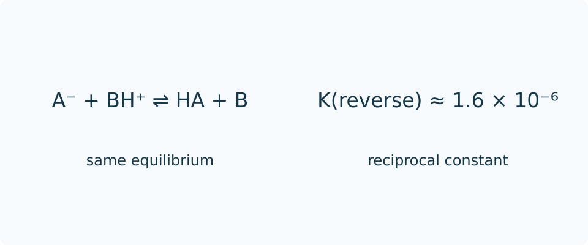
Reverse the constant when reversing the equation
The reverse reaction uses the reciprocal equilibrium constant, not the same large number.
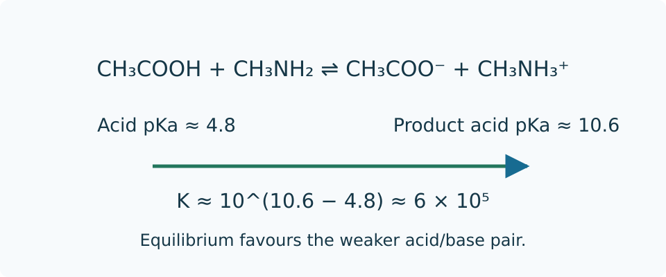
Do not infer reaction speed from K
An equilibrium ratio compares states. It does not specify how fast the reaction reaches equilibrium.
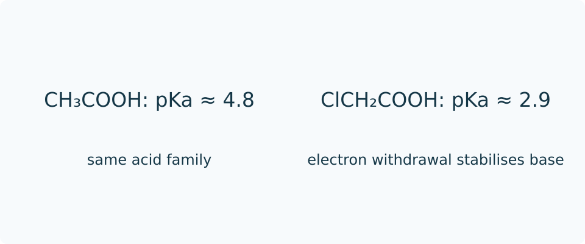
Compare a controlled substituent change
A nearby electron-withdrawing Cl group lowers this related carboxylic-acid pKa by stabilising its conjugate base.
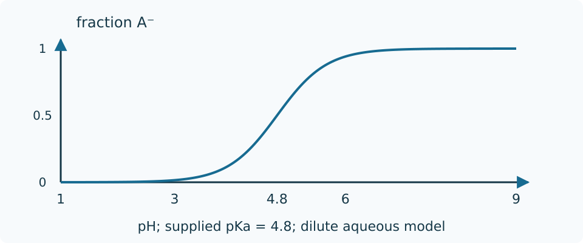
Plot a defined acid rather than an unspecified curve
At supplied pKa 4.8, the predicted A⁻ fraction rises continuously as aqueous pH increases.
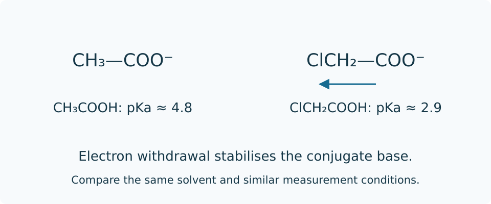
Keep induction distinct from resonance
Inductive effects act through sigma bonds; ethanoate resonance redistributes electrons within its conjugated group.
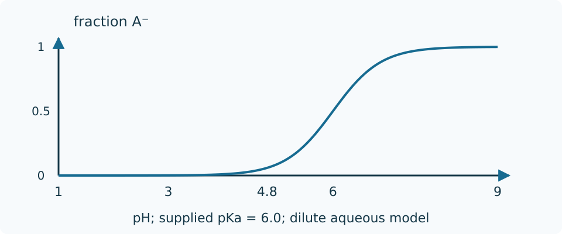
Change the acid while keeping the pH range
Raising pKa to 6.0 shifts the same-shaped ideal speciation curve toward higher pH.
Compare supplied pKa values 4.8 and 6.0 before calculating.
The pKa 4.8 acid is 50% A⁻. The pKa 6.0 acid is only about 5.9% A⁻ at the same pH.
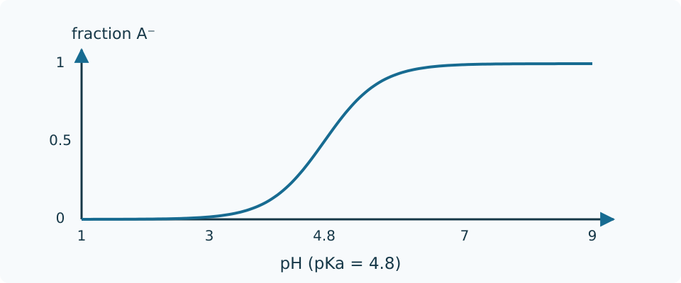
Read a curve as a population statement
The ordinate is [A⁻]/([HA]+[A⁻]), not the number of protons on an individual molecule.
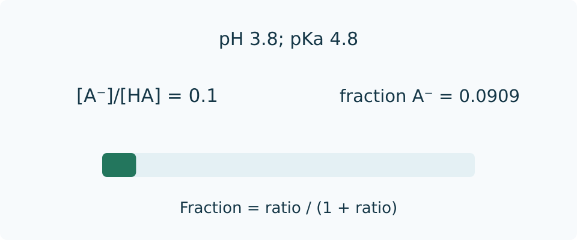
Start below the midpoint
At pH 3.8 and pKa 4.8, A⁻/HA = 0.1. Convert that ratio into a fraction.
Check the two limiting directions
Low pH favours HA; high pH favours A⁻ in this monoprotic dilute aqueous model.
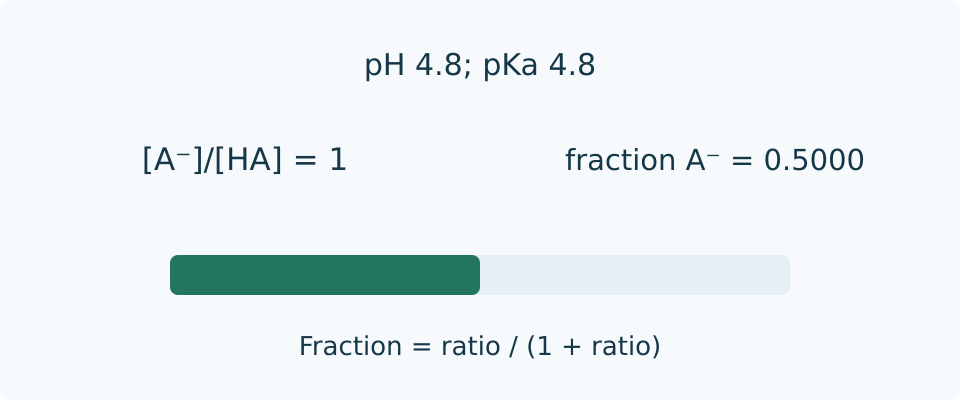
Evaluate the midpoint exactly
At pH = pKa the ratio is one, so fraction A⁻ = 1/(1+1) = 0.5.
Convert A⁻/HA to A⁻/(A⁻+HA). Are the denominators identical?
Use 0.1/(1+0.1) = 0.0909. Ratio and fraction are different quantities.
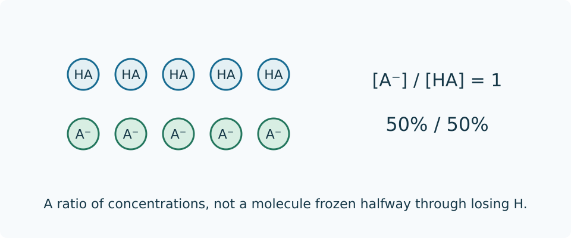
Interpret 50/50 without half-molecules
At the midpoint, equal concentrations of the two molecular species coexist.
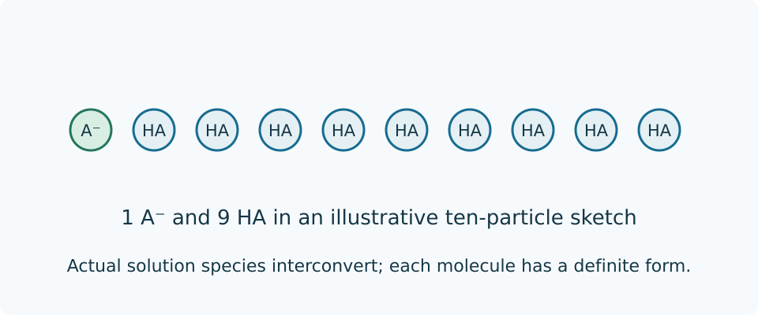
Read a low-ionisation particle sketch
One A⁻ among ten illustrative particles corresponds to about 10%, not an atom carrying one-tenth of a charge.
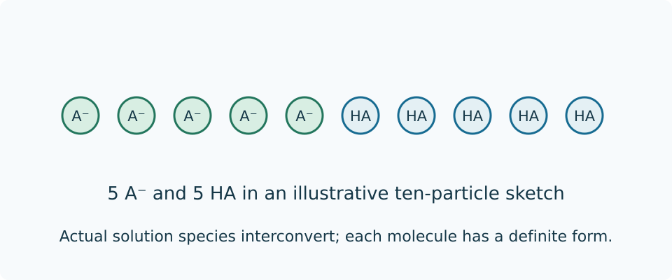
Read an equal-species sketch
Five HA and five A⁻ represent equal populations. The sketch is illustrative, not a measurement of ten actual molecules.
Describe what a 50% fraction means in terms of definite molecular species.
A particular species is HA or A⁻. The fraction describes how much of the population belongs to each form.
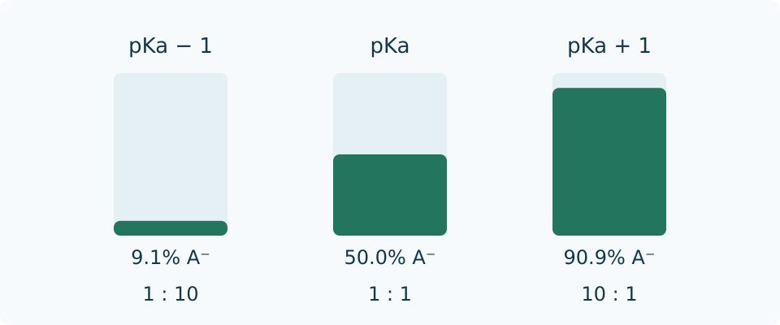
Convert the tenfold ratio explicitly
At pKa + 1, A⁻/HA = 10. The fraction is 10/11.
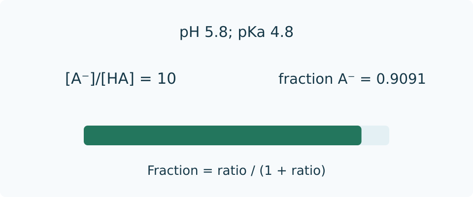
Read the near-upper part of the curve
At pH 5.8, pKa 4.8, the ionised fraction is about 0.9091.
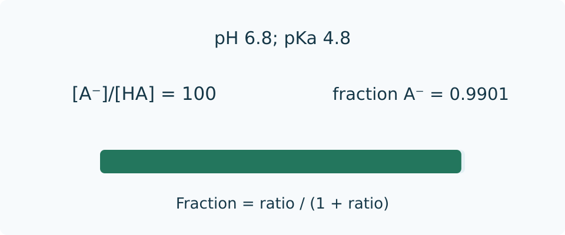
Check two units above pKa
At pH 6.8 the ratio is 100 and the fraction is 100/101, about 0.9901.
An R calculation returns 10. What quantity may the student have calculated instead?
A⁻/HA may exceed one. A⁻/(HA+A⁻) must stay between zero and one.
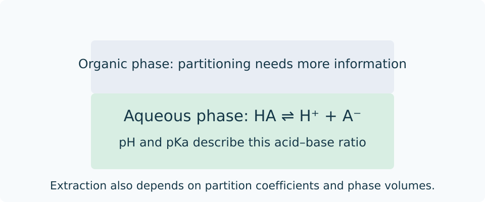
Separate aqueous chemistry from phase transfer
Which part of the diagram is described by the supplied acid–base equation?
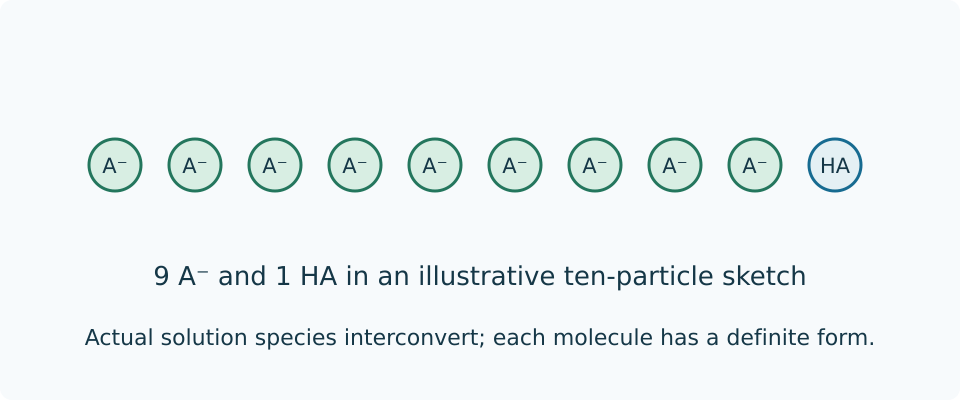
Read a mostly ionised population
Nine A⁻ among ten illustrative species means predominantly the conjugate base, without implying complete ionisation.
List the extra extraction inputs
Partition behaviour and the two phase volumes affect recovery beyond aqueous species ratios.
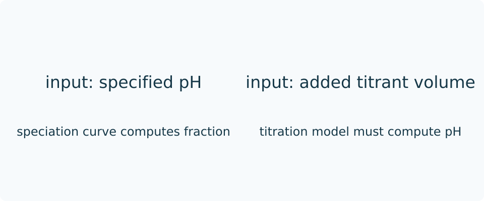
Do not mislabel the horizontal axis
This speciation plot takes pH as input. A titration curve instead needs a model connecting titrant addition to pH.
Was it an experimental measurement, a proof of solvent recovery, or a sensitivity check of the supplied model?
The plot visualises consequences of an assumed pKa and dilute aqueous relationship. It is neither new measured data nor an extraction calculation.
Use CH₃COOH + CH₃NH₂ as the common example linking electron flow, conjugates, pKa and population.
Use the exercises, then the self-check. Required core problems and optional transfer work are labelled separately.
Write one chemical claim, the feature that supports it and one limit of the inference.
The reading guide provides optional textbook support; no textbook is needed to attempt the local practice.